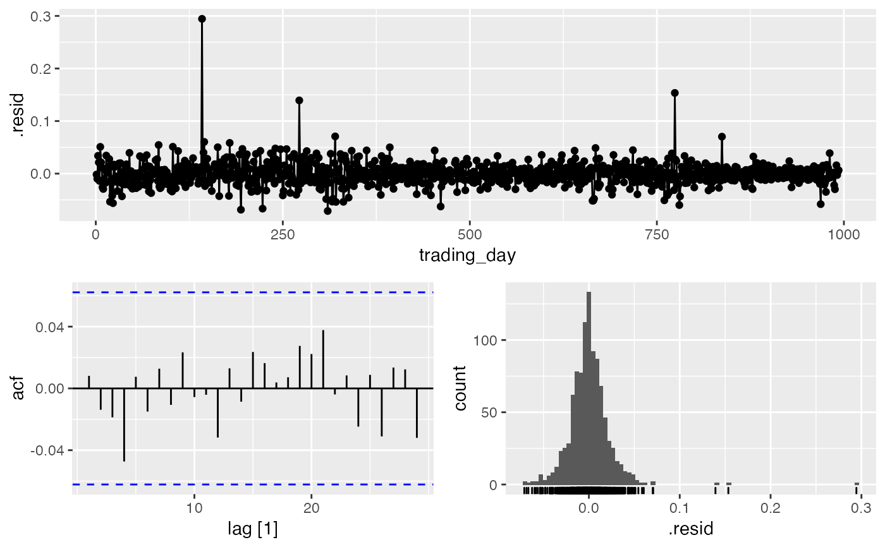

DaysModelPicker.RdFunction to choose optimal daily forecast model
DaysModelPicker(data, Outcome, DateVar, H.Horizon = 14)
| data | A regularised daily tsibble. |
|---|---|
| Outcome | A valid variable name for the Outcome to be modelled in in `data`. |
| DateVar | A valid variable name for the time index in `data`. |
| H.Horizon | An integer for the forecast horizon/test subset of `data`. |
A list containing:
Accuracy.Table: accuracy for the forecast horizon against the test sample.
test: the test set
train: the training set
Model.Fits: the model fits
Model.Forecasts: the forecasts
Min.Model: the minimum model by MAE
Min.Report: the minimum model report
Min.Res.Plot NW: the gg_tsdisplay for the minimum model
Min.Forecast.Plot NW: a plot of the minimum forecast by MAE
#> Warning: Current temporal ordering may yield unexpected results. #> ℹ Suggest to sort by ``, `trading_day` first.#>#> Warning: 1 error encountered for K = 1 #> [1] K must be not be greater than period/2#> Warning: 1 error encountered for K = 2 #> [1] K must be not be greater than period/2#> Warning: 1 error encountered for K = 3 #> [1] K must be not be greater than period/2#> Warning: 1 error encountered for NNET1 #> [1] K must be not be greater than period/2#> Warning: 1 error encountered for NNET2 #> [1] K must be not be greater than period/2#> Warning: 1 error encountered for NNET3 #> [1] K must be not be greater than period/2#> Warning: 1 error encountered for prophet #> [1] 'origin' must be supplied#> Series: daily.returns #> Model: ETS(A,N,N) #> Smoothing parameters: #> alpha = 0.0001000114 #> #> Initial states: #> l #> 0.001694106 #> #> sigma^2: 5e-04 #> #> AIC AICc BIC #> -711.8962 -711.8720 -697.1940#> $test #> # A tsibble: 15 x 10 [1] #> symbol date open high low close volume adjusted daily.returns #> <chr> <date> <dbl> <dbl> <dbl> <dbl> <dbl> <dbl> <dbl> #> 1 FB 2016-12-09 119. 120. 119. 120. 17436000 120. 0.00648 #> 2 FB 2016-12-12 119. 119. 118. 118. 17769700 118. -0.0160 #> 3 FB 2016-12-13 118. 122. 118. 120. 29558100 120. 0.0216 #> 4 FB 2016-12-14 120 122. 119. 120. 25667800 120. -0.000831 #> 5 FB 2016-12-15 120. 122. 120. 121. 20102900 121. 0.00299 #> 6 FB 2016-12-16 121. 122. 119. 120. 25174600 120. -0.00581 #> 7 FB 2016-12-19 120. 120. 119. 119. 15841700 119. -0.00526 #> 8 FB 2016-12-20 120. 120. 119. 119. 13528100 119. -0.00126 #> 9 FB 2016-12-21 119. 119. 118. 119. 10735800 119. -0.000420 #> 10 FB 2016-12-22 119. 119. 117. 117. 16222400 117. -0.0138 #> 11 FB 2016-12-23 117 118. 116. 117. 10877300 117. -0.00111 #> 12 FB 2016-12-27 117. 119. 117. 118. 12027700 118. 0.00631 #> 13 FB 2016-12-28 118. 118. 117. 117. 11980200 117. -0.00924 #> 14 FB 2016-12-29 117 118. 116. 116. 9921400 116. -0.00488 #> 15 FB 2016-12-30 117. 117. 115. 115. 18600100 115. -0.0112 #> # … with 1 more variable: trading_day <int> #> #> $train #> # A tsibble: 993 x 10 [1] #> symbol date open high low close volume adjusted daily.returns #> <chr> <date> <dbl> <dbl> <dbl> <dbl> <dbl> <dbl> <dbl> #> 1 FB 2013-01-02 27.4 28.2 27.4 28 69846400 28 0 #> 2 FB 2013-01-03 27.9 28.5 27.6 27.8 63140600 27.8 -0.00821 #> 3 FB 2013-01-04 28.0 28.9 27.8 28.8 72715400 28.8 0.0356 #> 4 FB 2013-01-07 28.7 29.8 28.6 29.4 83781800 29.4 0.0229 #> 5 FB 2013-01-08 29.5 29.6 28.9 29.1 45871300 29.1 -0.0122 #> 6 FB 2013-01-09 29.7 30.6 29.5 30.6 104787700 30.6 0.0526 #> 7 FB 2013-01-10 30.6 31.5 30.3 31.3 95316400 31.3 0.0232 #> 8 FB 2013-01-11 31.3 32.0 31.1 31.7 89598000 31.7 0.0134 #> 9 FB 2013-01-14 32.1 32.2 30.6 31.0 98892800 31.0 -0.0243 #> 10 FB 2013-01-15 30.6 31.7 29.9 30.1 173242600 30.1 -0.0275 #> # … with 983 more rows, and 1 more variable: trading_day <int> #> #> $Model.Fits #> # A mable: 1 x 10 #> `K = 1` `K = 2` `K = 3` ARIMA ETS #> <model> <model> <model> <model> <model> #> 1 <NULL model> <NULL model> <NULL model> <ARIMA(0,0,0) w/ mean> <ETS(A,N,N)> #> # … with 5 more variables: NNET1 <model>, NNET2 <model>, NNET3 <model>, #> # prophet <model>, Combo1 <model> #> #> $Model.Forecasts #> # A fable: 150 x 4 [1] #> # Key: .model [10] #> .model trading_day daily.returns .mean #> <chr> <dbl> <dist> <dbl> #> 1 K = 1 994 NA NA #> 2 K = 1 995 NA NA #> 3 K = 1 996 NA NA #> 4 K = 1 997 NA NA #> 5 K = 1 998 NA NA #> 6 K = 1 999 NA NA #> 7 K = 1 1000 NA NA #> 8 K = 1 1001 NA NA #> 9 K = 1 1002 NA NA #> 10 K = 1 1003 NA NA #> # … with 140 more rows #> #> $Accuracy.Table #> # A tibble: 10 x 10 #> .model .type ME RMSE MAE MPE MAPE MASE RMSSE ACF1 #> <chr> <chr> <dbl> <dbl> <dbl> <dbl> <dbl> <dbl> <dbl> <dbl> #> 1 ARIMA Test -0.00385 0.00984 0.00793 162. 162. NaN NaN -0.371 #> 2 Combo1 Test -0.00385 0.00984 0.00793 162. 162. NaN NaN -0.371 #> 3 ETS Test -0.00385 0.00984 0.00793 162. 162. NaN NaN -0.371 #> 4 K = 1 Test NaN NaN NaN NaN NaN NaN NaN NA #> 5 K = 2 Test NaN NaN NaN NaN NaN NaN NaN NA #> 6 K = 3 Test NaN NaN NaN NaN NaN NaN NaN NA #> 7 NNET1 Test NaN NaN NaN NaN NaN NaN NaN NA #> 8 NNET2 Test NaN NaN NaN NaN NaN NaN NaN NA #> 9 NNET3 Test NaN NaN NaN NaN NaN NaN NaN NA #> 10 prophet Test NaN NaN NaN NaN NaN NaN NaN NA #> #> $Min.Model #> # A tibble: 1 x 10 #> .model .type ME RMSE MAE MPE MAPE MASE RMSSE ACF1 #> <chr> <chr> <dbl> <dbl> <dbl> <dbl> <dbl> <dbl> <dbl> <dbl> #> 1 ETS Test -0.00385 0.00984 0.00793 162. 162. NaN NaN -0.371 #> #> $Min.Report #> # A mable: 1 x 1 #> ETS #> <model> #> 1 <ETS(A,N,N)> #> #> $Min.Res.Plot #>